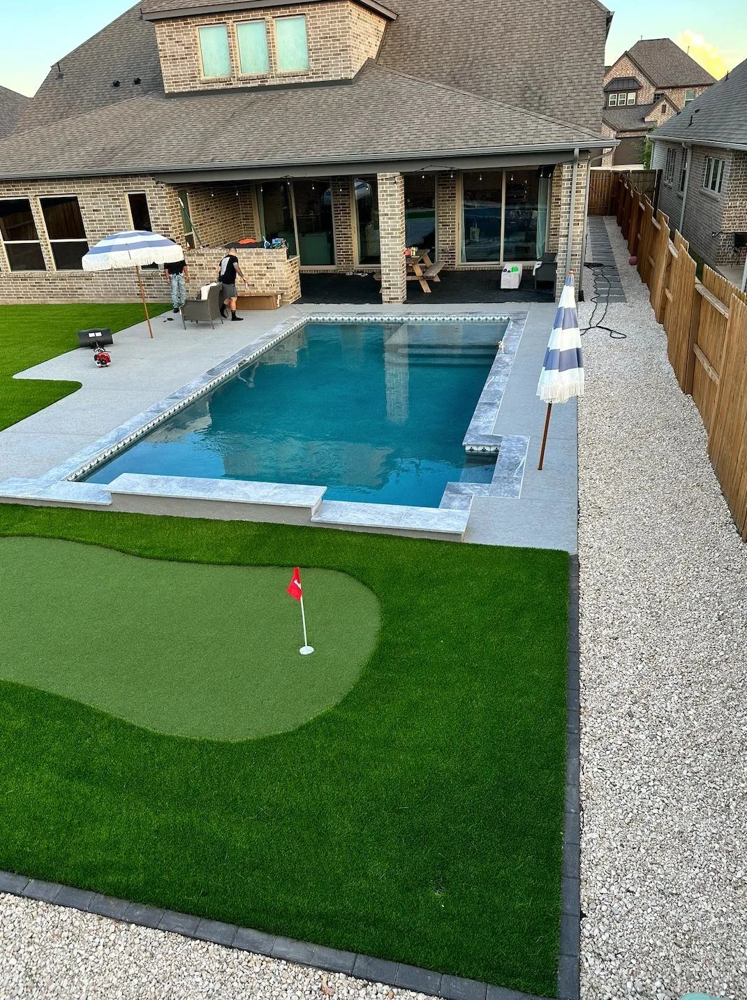
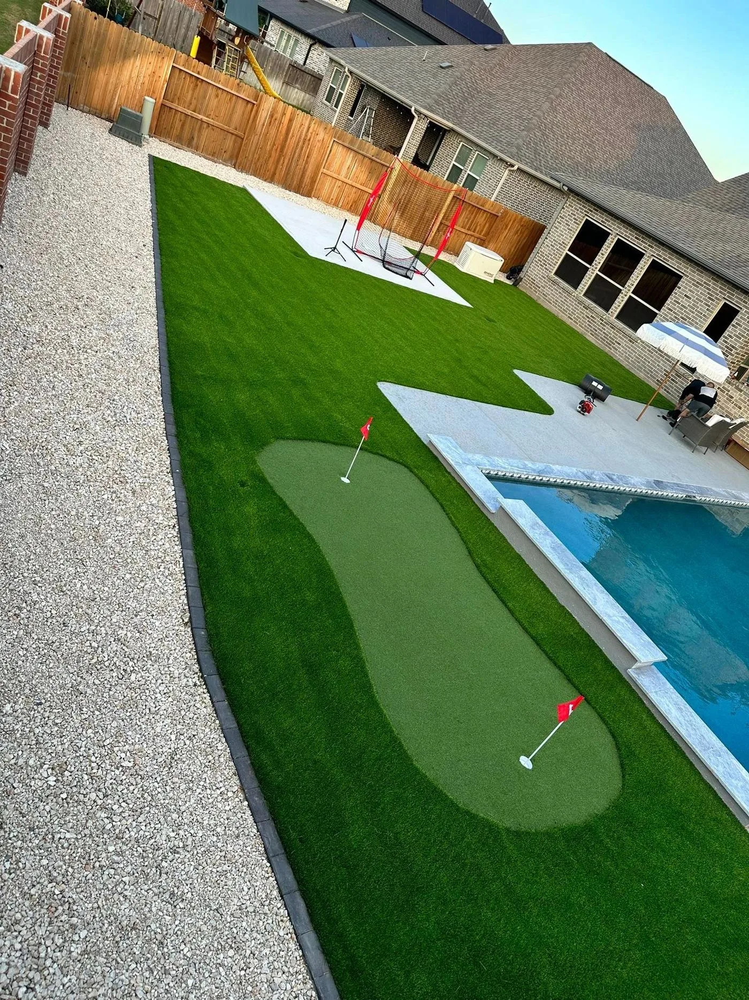

Build a Backyard You'll Actually Use
Custom Patio Installation in Houston
- Built for Texas Weather
- Free Consultation
Houston's Trusted Patio Installation Contractor
A well-built patio transforms your outdoor space into a living extension of your home — and in Houston's climate, it needs to be done right. At Longhorn Hardscape & Construction, we specialize in custom patio installation throughout Houston, Sugar Land, Katy, Pearland, and Missouri City. Whether you want a simple stamped concrete slab, an elegant paver patio, or a full covered outdoor living area, we deliver clean, precise work that holds up to Texas heat and rain. Every patio starts with a free consultation at your home, a prompt estimate, and a transparent timeline from start to finish. We're committed to craftsmanship that lasts.
Types of Patios We Build in Houston
Paver Patios
Concrete, brick, or natural stone pavers laid in custom patterns. Durable, beautiful, and easy to repair if one piece ever shifts.
Stamped Concrete
Decorative concrete with patterns that mimic stone, slate, or wood — at a lower cost with less maintenance.
Covered Patios
Pergolas, shade structures, and full roof extensions that make your patio usable year-round — even during Houston summers.
Natural Stone
Flagstone, travertine, and limestone patios that bring a premium, one-of-a-kind look that ages beautifully in Texas.
Pool Surrounds
Non-slip paver or concrete decking around your pool — safe, stylish, and built to handle constant water exposure.
Fire Pit Areas
Custom patio areas with integrated fire pits or fire tables — the perfect centerpiece for Houston evenings.
Why Choose Longhorn for Your Houston Patio
On-Time Delivery
We give you a realistic timeline and stick to it. No drawn-out projects, no excuses — just results.
Transparent Pricing
No hidden fees. Your estimate is your price. We explain every line item so you know exactly what you're paying for.
High-Quality Materials
We source materials rated for Texas heat and humidity — not the cheapest option, but the one that lasts 20+ years.
Our Patio Installation Process
From first call to final walkthrough — here's exactly what to expect.
Free Consultation at Your Home
We come to you, walk the space, listen to your vision, and understand your budget. No pressure, no obligation.
Custom Design & Free Estimate
We design your patio layout and deliver a detailed estimate before we leave — so you can make a decision with confidence.
Planning & Materials Selection
We finalize materials, colors, and patterns together. We source everything and schedule your project start date.
Professional Installation
Our crew arrives on time, works clean, and communicates with you throughout. Timeline is determined after a full project analysis.
Final Walkthrough — Enjoy Your Space
We walk through every inch with you and address any outstanding details before we consider the job complete.
Patio Projects in Houston, TX
A sample of our recent patio work across Greater Houston.






Patio Installation Areas We Serve
We install patios across Greater Houston and Fort Bend County.
Patio Installation FAQs — Houston
Patio scope depends on size, material choice, base preparation requirements, drainage needs, and any add-ons like fire pits, seating walls, or covered structures. Every property in Houston is different — we visit your home and provide a detailed written estimate at no charge.
Timeline depends on the scope, materials, and complexity of your specific project. We provide a clear, detailed schedule after a full site visit and project analysis.
Most standard uncovered patios do not require a permit in Houston. Covered structures like pergolas and roof extensions may require a building permit. Permit requirements depend on your specific project — we'll advise you during your free consultation.
Yes. We install patios throughout Greater Houston including Sugar Land, Katy, Pearland, Missouri City, Fort Bend County, and all surrounding communities. Call us and we'll confirm your area.